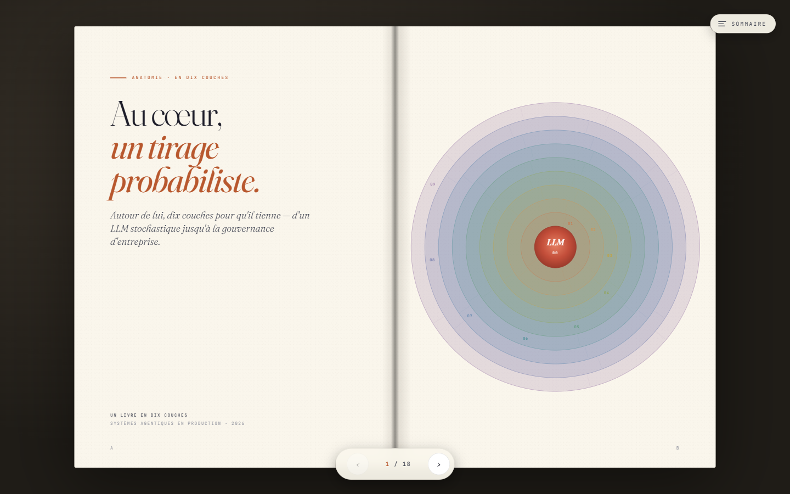

Huit ans à croiser data science et product management. J'aide aujourd'hui les organisations à passer du POC au produit — en IA agentique, product design d'IA et data storytelling.
L'IA sort du POC pour entrer en production — et l'interface avec l'humain, autant que la technique, devient le vrai sujet.
Chaque sujet se décline en plusieurs formats — scrollytelling, livre interactif, édition papier. Même matière, tempos différents.
Dossier de veille publié le jour de l'ouverture du procès à Oakland. Chronologie tri-pistes, anatomie juridique, témoins, écosystème financier — application compagnon avec 52 régions interactives.
Un dossier scrollytelling sur la gouvernance des IA agentiques — paradoxe, lignes de défense, infrastructure agentique, AI Act, frameworks, métriques, et le prix (17 %).

Dix couches autour d'un tirage probabiliste — du LLM stochastique à la gouvernance d'entreprise. Scrollytelling, livre interactif en 18 doubles pages, édition papier A4.
Formation — Lycée du Parc (MPSI/MP) · ENSTA (M2 optimisation & data) · École polytechnique (M2 sciences des données). Mais aussi : NYU · Université de Polynésie française · GEODE (Géopolitique de la Datasphère).